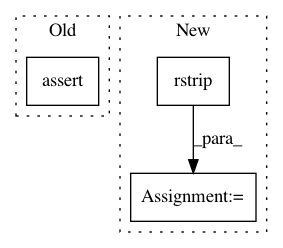

66a06524eba0b22d14204baeb2ca6d4c9db7d1d0,scripts/semantic_types.py,,convert_coq_to_nltk_type,#Any#,245
Before Change
type_sig = coq_type_list[3:]
type_ids = []
for i, type_item in enumerate(type_sig):
assert (i % 2 == 1) == (type_item == "->")
if type_item.startswith("Entity"):
type_ids.append("e")
elif type_item.startswith("Prop"):
type_ids.append("t")
After Change
assert parameter == "Parameter" and colon == ":"
// This list contains something like ["Entity", "->", "Prop", "->", "Prop"...]
type_sig = coq_type_list[3:]
nltk_type_str = " ".join(type_sig).rstrip(".").replace(
"->", " ").replace(
"Entity", "e").replace(
"Prop", "t").replace(
"Event", "v")
if not nltk_type_str.startswith("(") or not nltk_type_str.endswith("("):
nltk_type_str = "(" + nltk_type_str + ")"
// Add pre-terminals (necessary for NLTK, if we convert to CNF).
nltk_type_str = re.sub(r"([evt])", r"(N \1)", nltk_type_str)
In pattern: SUPERPATTERN
Frequency: 3
Non-data size: 3
Instances
Project Name: mynlp/ccg2lambda
Commit Name: 66a06524eba0b22d14204baeb2ca6d4c9db7d1d0
Time: 2017-05-12
Author: pascual@nii.ac.jp
File Name: scripts/semantic_types.py
Class Name:
Method Name: convert_coq_to_nltk_type
Project Name: pantsbuild/pants
Commit Name: 6e0a6ece0ccda7dfe7d989b721f853aa5fedc063
Time: 2014-12-15
Author: wangpeiyu@gmail.com
File Name: tests/python/pants_test/tasks/jvm_compile/java/test_java_compile_integration.py
Class Name: JavaCompileIntegrationTest
Method Name: test_java_compile_reads_resource_mapping
Project Name: calico/basenji
Commit Name: 655f60546e0677648f873d204d43b2a1dacf2fa3
Time: 2019-03-27
Author: drk@calicolabs.com
File Name: bin/tfr_bw.py
Class Name:
Method Name: main